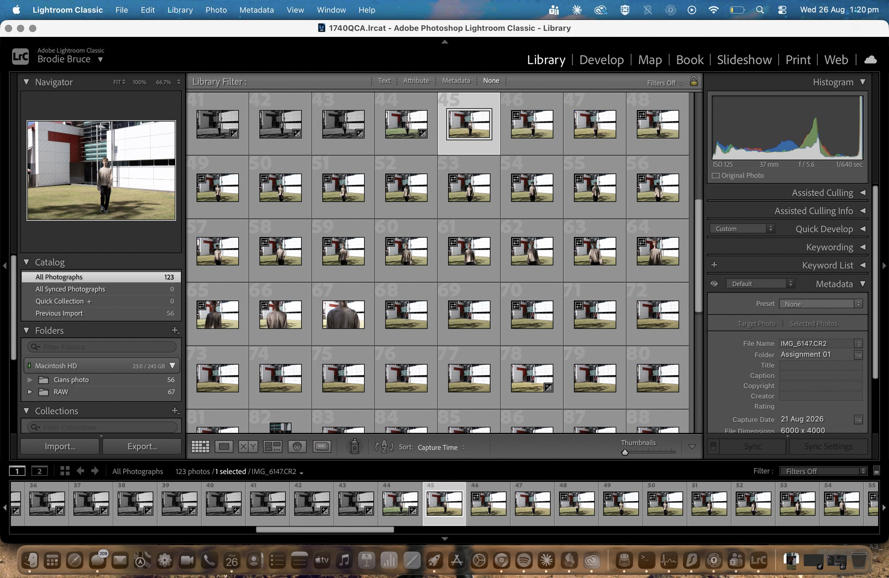
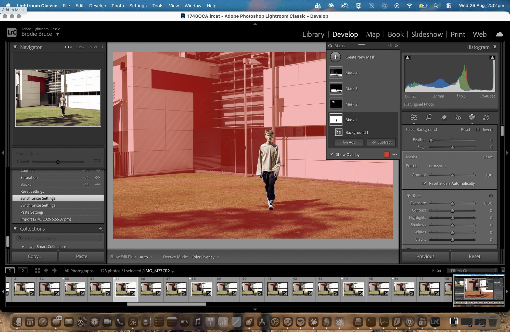
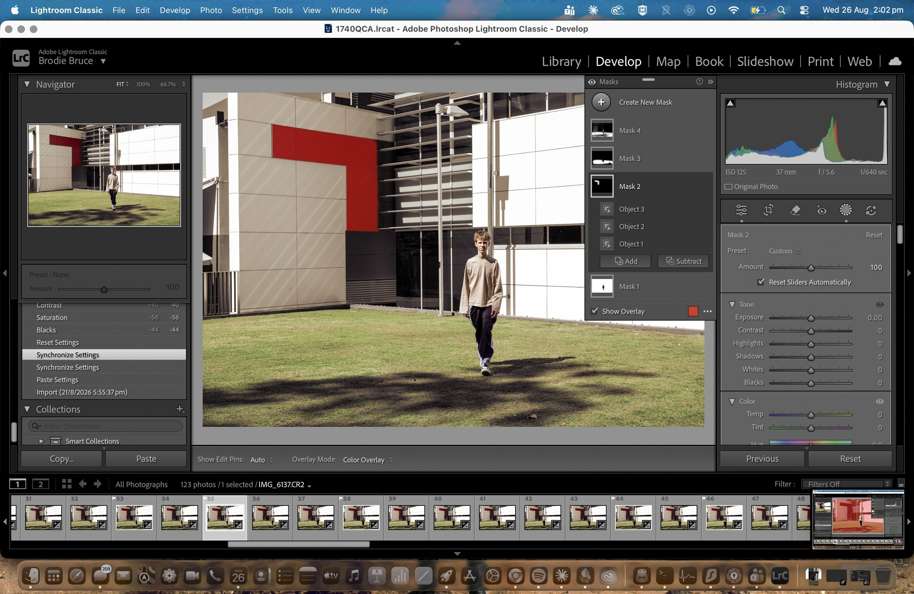
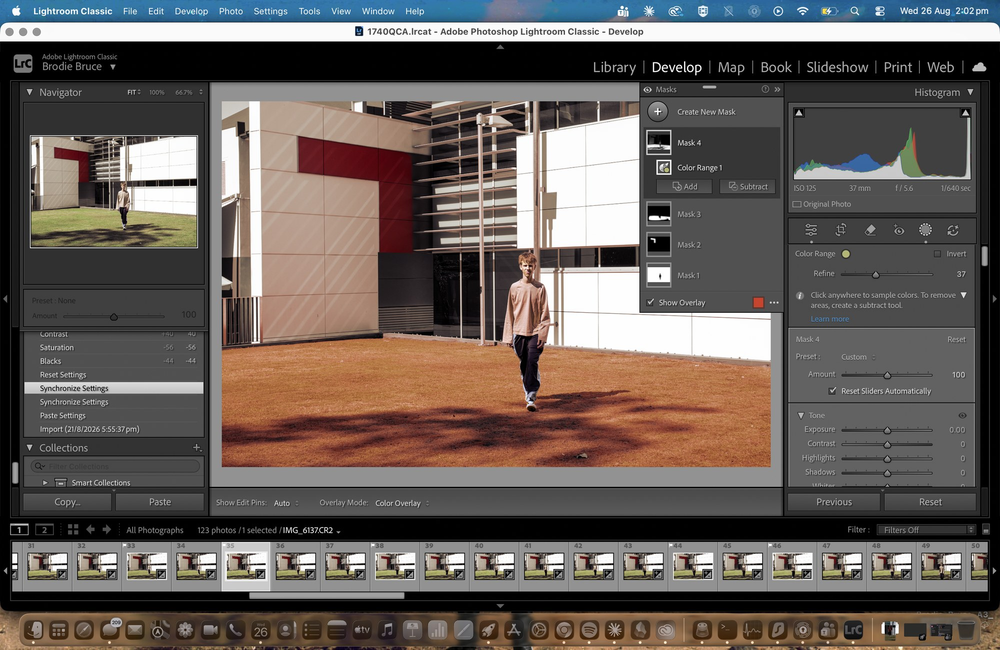
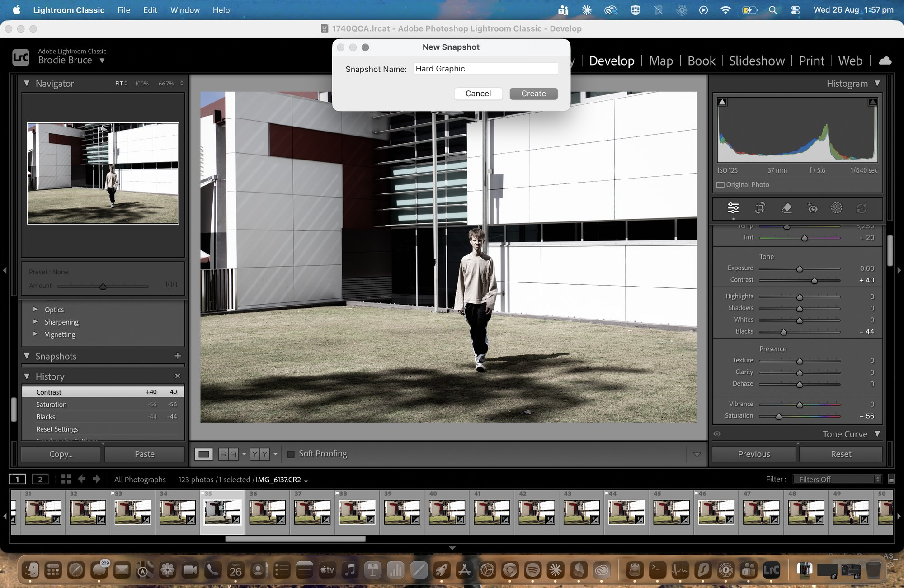
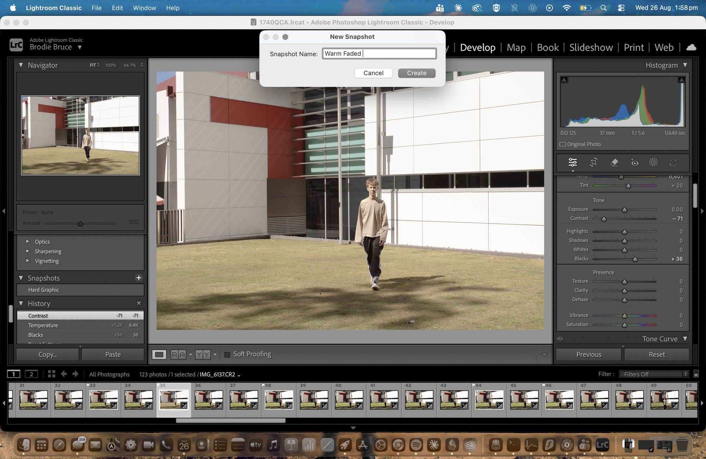
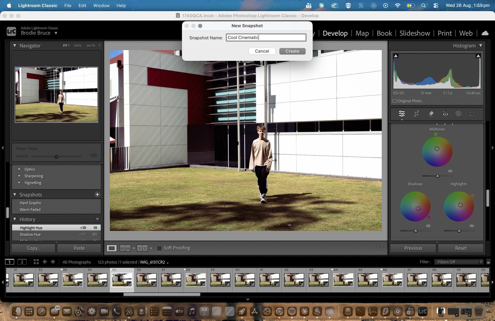
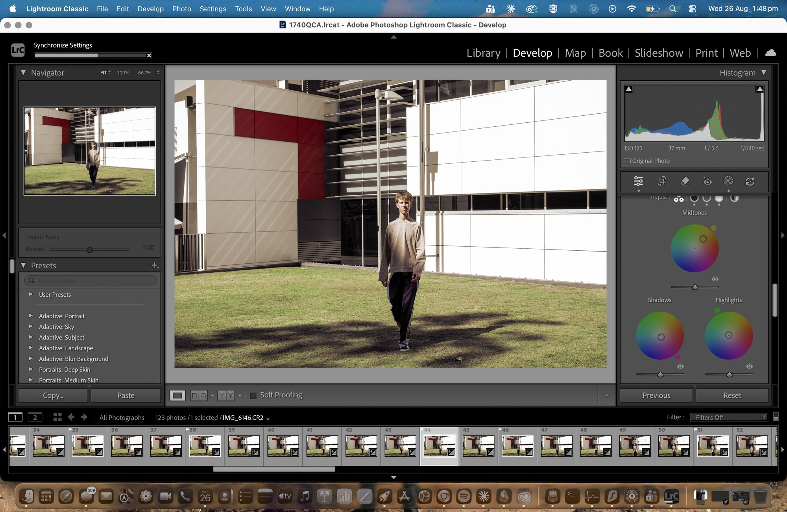
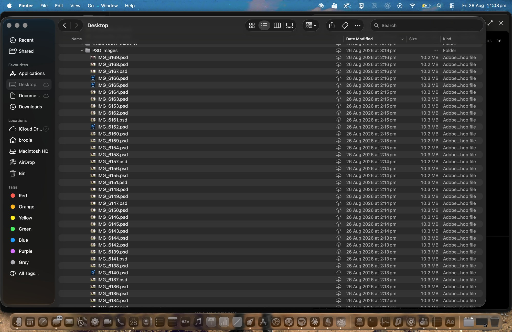
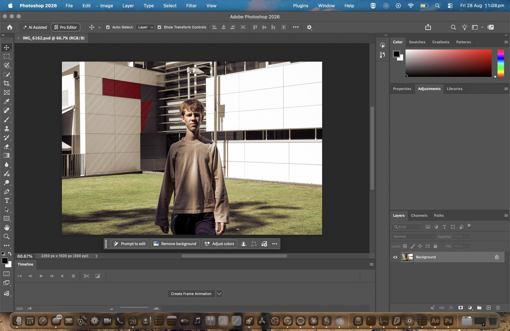

Capture

The Kind column says Canon Raw file on every one of them, so the camera was set to RAW and not JPEG, and they sit between 27 and 33 MB each because that is what carries the full sensor data. Once these were imported I stopped touching this folder entirely, since Lightroom only stores a path to each file rather than the file itself, which means moving any of them would break every edit I had made against them.
ISO 125 · 37 mm · f/5.6 · 1/640 sec · 6000 × 4000
Import

I opened the catalogue from inside the database rather than launching Lightroom from the dock, because launching the app reopens whatever catalogue it used last and that could easily be the wrong one. Import was set to Add rather than Copy or Move, since Add just registers where the files already are without touching them. Copy would have duplicated 2.1 GB for no reason and Move would have pulled the RAW files straight out of the structure I built in Task 01.
Local masking
Instead of grading the whole frame at once I built four local masks so that I could control each part of the composition on its own. I used three different selection methods across them, and I picked each one based on how that element actually behaves rather than just using whatever I was used to.

The red overlay shows everything the mask has picked up, which is the whole building, the lawn and the shadows, with the figure cut cleanly out of the middle of it. The edge around his hair and the loose sleeve of his jumper held up far better than anything I could have brushed by hand. Having the background isolated on its own means I can darken or cool the entire environment without any of it touching his skin tones.

Colour Range selects by sampled colour value rather than by a shape I draw, with the Refine slider at 37 controlling how far the selection spreads out from the point I sampled. That mattered here because the lawn is patchy and cut through by hard tree shadows, so brushing it would have meant tracing around every single shadow edge. Sampling the green instead let the selection follow the colour into the shadows on its own. The warm shift across the grass in this frame is the mask doing its job while the building behind it stays neutral.

The red panel is the only strong colour in an otherwise neutral frame, so it is the thing carrying the composition. I selected it with Object, then added two more object selections into the same mask to catch the sections the first pass had missed. Building it as one mask made from three additions rather than three separate masks means a single adjustment governs the whole panel, so it stays consistent instead of drifting between its parts, and that is what let me pull the saturation out of everything else while holding the red at full strength.
Four directions in Develop
I built four different grades on one frame and saved each of them as a named Snapshot, so that I could flick between them and compare them directly instead of trying to judge them from memory. You can see the Snapshots panel filling up as you go across these screenshots.

Contrast up to +40, saturation down to −56 and blacks down to −44. Taking the colour out turns the scene into tone and shape, so the white cladding flattens into pure light, the recessed section drops to almost black, and the grid of the building becomes the subject instead of the materials it is made from. The figure still reads against it because his jumper sits at a mid tone between the two extremes.
Contrast +40 · Saturation −56 · Blacks −44

The opposite direction. Blacks at +36 stop the shadows ever reaching true black, which takes the digital edge off it and makes the whole thing feel matte, and warming it to 6401 K softens the harshness of the midday light. Contrast at −71 is further than I would normally push it, but I wanted to find the point where the image stops holding together and this sits just before that.
Contrast −71 · Blacks +36 · Temp 6401 K · Tint +20

Built on the Colour Grading wheels rather than the Basic panel, with cool blue going into the shadows at hue 321 and warm orange into the highlights at hue 38. Splitting the tones that way separates the figure from the building using colour temperature instead of contrast, which means I keep detail at both ends of the histogram and it still reads as properly graded.
Shadow hue 321 · Highlight hue 38

Highlights at −50 pull back the blown out cladding and shadows at +49 open the lawn up again, with exposure down half a stop and whites at +27 so the panels stay bright without clipping. This is the grade that the four masks sit underneath, and it is the one I synced across the entire sequence.
Exposure −0.50 · Highlights −50 · Shadows +49 · Whites +27 · Blacks −19 · Temp 4781 K
Presets and syncing
Once I had settled on a direction I saved it as a preset so the grade was not stuck on one file. I deliberately left Masking out of the preset, because the masks are drawn against the composition of one specific frame and carrying them across would have placed them completely wrong on every other shot. Sync Settings then pushed the tonal grade across the full set, which matters because in Task 05 these run as a sequence and any variation between frames shows up as flicker once they play back.
Export

Around 10 MB each, which is what the layered format costs. I sent them out at 1500 px on the short edge rather than at full size, because Task 03 stacks ten of these into a single document and full 6000 by 4000 frames at that layer count would have been unworkable on my machine.

This confirms the export actually landed as a working file rather than just an icon sitting in a folder. It is the Natural Warm grade with the four masks applied, at 2250 by 1500 pixels, which is the version I synced across the whole sequence.